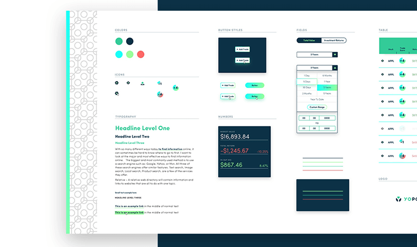
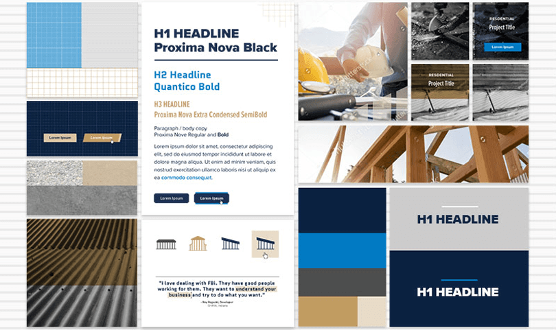
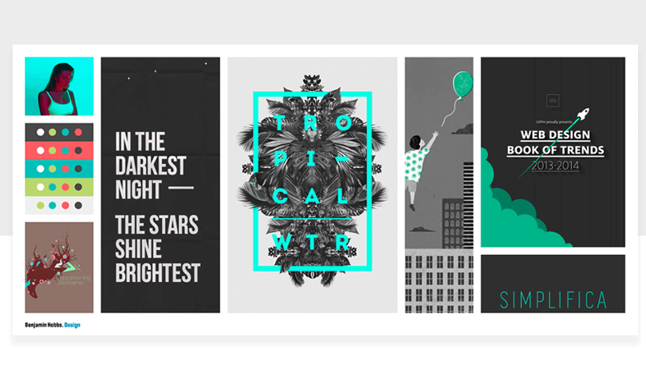
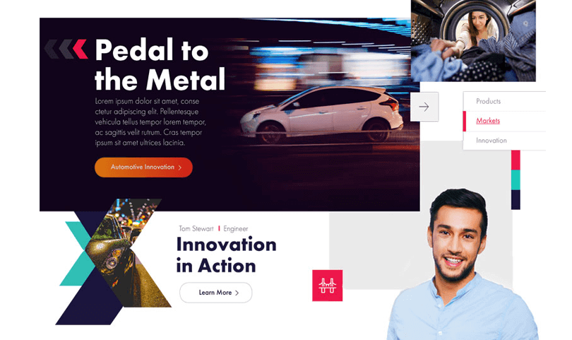

Moodboards and Style Tiles
What is it?
Mood boards and style tiles are deliverables to help communicate brand, feel, and aspirations.
Moodboard
Deliverables are less literal and more about exploring tone and mood. Inspirational vs literal. It is about exploration, so make sure you don’t get tied to one concept.
Style Tiles
More literal and practical, featuring fonts, colors and images that you could very well use in a final piece of work. Style tiles are for when a moodboard is too vague and a style guide is too literal.

How and what to consider:
- What / how does the brand wants to represent?
- Online vs offline? How might you present? Online - organized and aligned well. Tells a story. Offline, more flexible as you can speak through it. Could be group of images vs a collection. Could be tactile with other elements including texture and materials.
- Use it as a tool to present vs sending it off to the client. They may not understand. Tell a story vs sending it off for approval.
- Use it as a tool to present vs sending it off to the client. They may not understand. Tell a story vs sending it off for approval.
- Present it yourself. Don’t let anyone else speak for your vision, or understanding of your vision.
- Be willing and able to iterate. This is intended to be unfinished and a work in progress.
- Pay attention to what they do not say. Are they into it? Apprehensive?
- Dont assume that your moodboard itself is enough to tell the story. Verbalize intent, look and feel.
- Helps speed up sign off, or at least move you into the style tiles phase.
- These are not copyright images, they are intended for internal communication. Steal wildly, just DO NOT PUBLISH.
- Don’t worry about watermarks
What to include / best practices:
- Color
- Typography
- Call to actions / button styles
- Shape and layouts (grids)
- Illustrations / Photographs
- Motion and animation
- Iconography
- Snippets of design ideas - for an commerce website, how do we provide product details? How does that align to a grid / columns etc.
- Annotate your ideas
- Pull color from images
- Have a primary and supplementary images. The primary should be strong, and supplementary should support the story.
- Use the size of elements to indicate their importance, and put related elements side by side.
- The goal is to invoke an emotional response.




